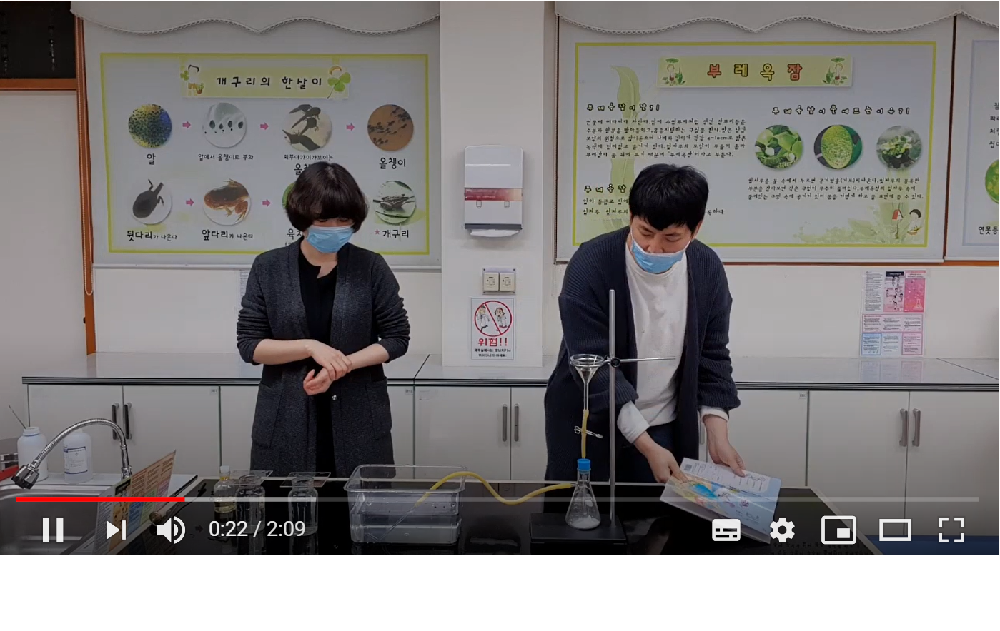

코로나로 인하여 과학 실험을 온라인으로 볼수 있었다.
수업에 따르면 우리 대기중에는 여러가지 기체가 있다고 한다.
제일 많은 기체는와 가 있다. 는 78퍼센트이고 는 21퍼센트라고한다.
불을 끄는데 필요한 기체는 이고, 불을 켜는데 필요한 기체는 이다.
또한 온도가 올라가면 가 증가하고, 압력이 올라가면 가 감소한다.
높은 산에 올라가면 과자봉지는 게 바뀔 것이다.
산소를 모으는 가장 좋은 방법은 에서 모으는 방법이다.
이를 수상치환이라고 하는데 수소·산소·질소 등 물에 잘 녹지 않는 기체를 모으기 위하여 사용되는 방법을 수상치환이라고 한다. 수면을 일치시키기 위해서 수조에 물을 부어 맞춘 용기에 관을 통해 기체를 넣고 거품으로 부상시켜 기체를 포집하는 방법이다. 이 과정 중에 수증기가 약간 혼입되기는 하나 목적하는 기체를 포집하는 데 어려움은 없다.